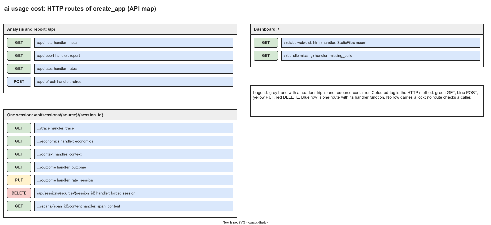

active approved inferred covers src/ai_usage_cost/*
Usage cost HTTP routes
This map lists every address the local dashboard talks to, grouped by what it serves. It shows which calls only read numbers and which ones change stored data, such as rating or forgetting a session. It also makes plain that no address asks who is calling, so the tool relies on staying on the local machine.
What the diagram shows
- One function builds the application, keeps the current analysis in memory and caches the spans of each session until the next refresh.
src/ai_usage_cost/api.py:198-214 - The meta route returns the clients, providers, models, projects, day range, rate table age, grouped warning counts and source list.
src/ai_usage_cost/api.py:255-287 - The report route passes every filter of its query string to the report builder.
src/ai_usage_cost/api.py:289-318 - The rates route returns the loaded rate table, and the refresh route runs the analysis again, clears the span cache and returns fresh meta.
src/ai_usage_cost/api.py:384-392 - The trace, economics, context and outcome routes read one session's spans through a helper that answers 404 when the session is unknown or was forgotten.
src/ai_usage_cost/api.py:230-242src/ai_usage_cost/api.py:320-353 - The economics route labels each turn with a redacted snippet of its first user message, and only when the privacy settings release text.
src/ai_usage_cost/api.py:333-343src/ai_usage_cost/api.py:70-83 - The put route stores a rating with notes and tags and returns it with fresh signals.
src/ai_usage_cost/api.py:355-359 - The delete route forgets a session, drops its cached spans and returns how many spans it deleted.
src/ai_usage_cost/api.py:361-368 - The content route returns the text of one span and answers 404 when the span is missing or its text is not released.
src/ai_usage_cost/api.py:370-382 - The root serves the built dashboard when the bundle folder exists, and otherwise a message that tells the reader how to build it.
src/ai_usage_cost/api.py:394-402 - Any route that opens the store answers 503 when the analysis was built without one.
src/ai_usage_cost/api.py:219-223
Capability and related functionality
- Serves the use cases explore spend in the dashboard, inspect and rate one session, forget a session and read the text of one span, drawn in Usage cost goals.
- The route list with its parameters is in Ai usage cost API, and the refusals are drawn in Usage cost refusals.
- The serve command that starts this application on the loopback address is in Ai usage cost Workflows, and the missing caller check is a risk in Ai usage cost Security.
Usage cost HTTP routes

Code references
| Code | What it shows |
|---|---|
src/ai_usage_cost/api.py:198-253 |
Application, span cache, store and session helpers |
src/ai_usage_cost/api.py:255-318 |
Meta and report routes |
src/ai_usage_cost/api.py:320-382 |
Session routes |
src/ai_usage_cost/api.py:384-402 |
Rates, refresh and dashboard routes |